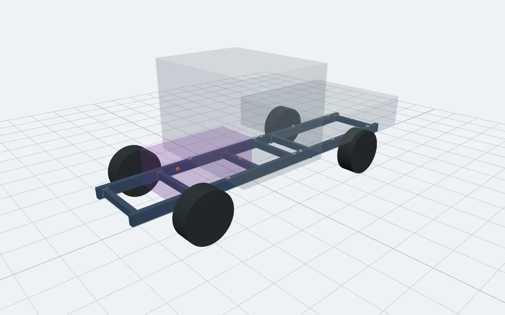
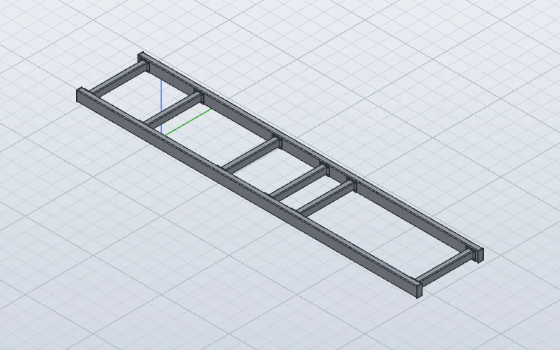
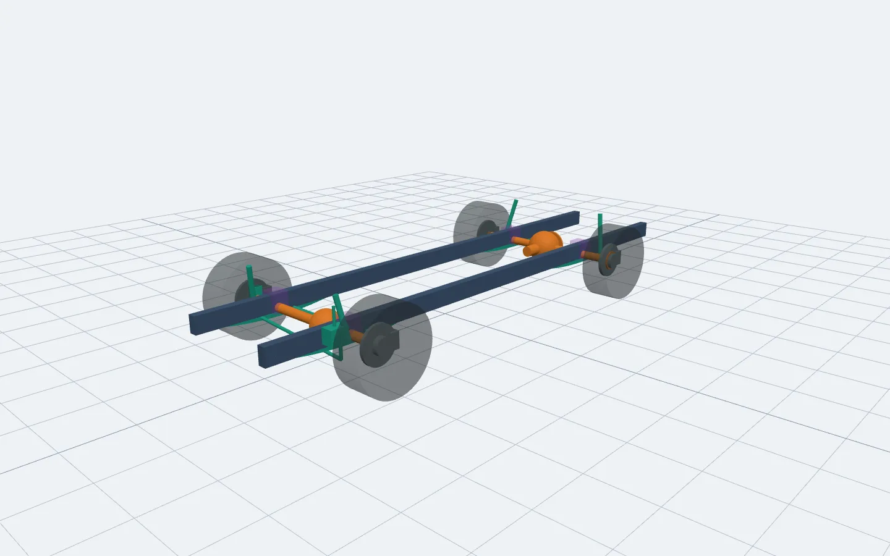
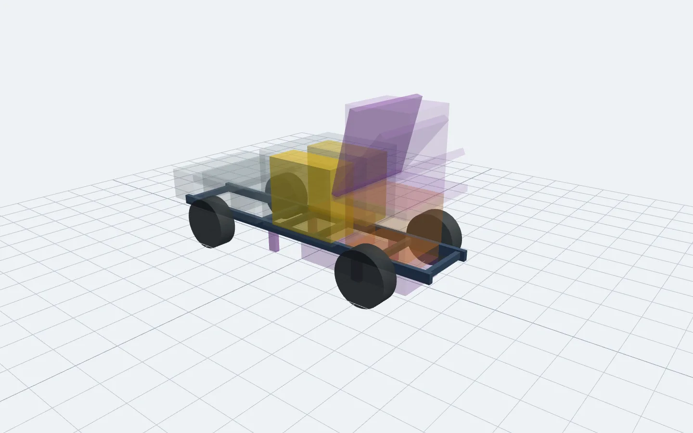
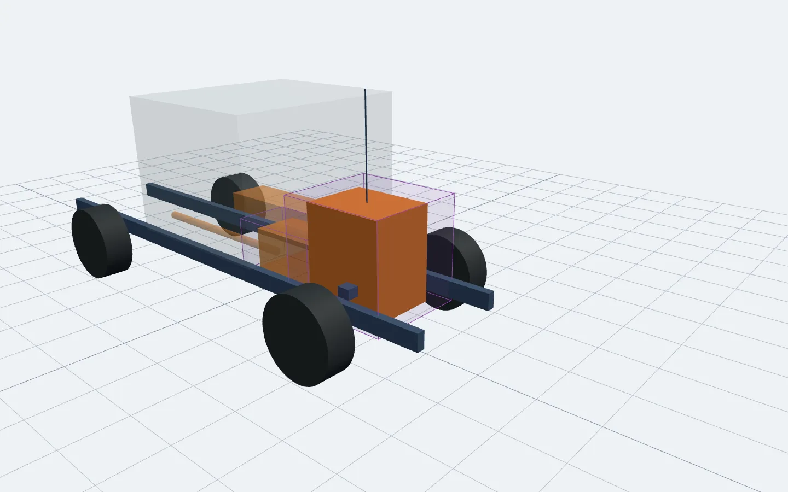
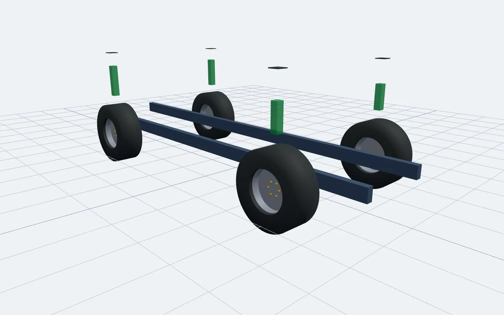

01 · Kit car
a-car
Phase 0 · foundations
An open source kit car, built to push back against the bloated platforms cars have become. The frame comes first, and its concept study is open now.
- Parts designed
- None yet
- Next up
- Frame and vehicle concepts
Open source vehicles
A line of kit vehicles designed in the open. Every part is a short script on Nurbly that people and their AI agents can read, change and send back.

An ordinary mechanic with common hand tools must be able to inspect, remove and replace every part that wears or breaks. If they cannot, the part is a design fault and gets reworked.
The kits ship without an engine, motor or battery. Standard mount pads and swappable adapter plates take the gasoline, diesel or electric powertrain each builder picks.
Parts are SolidCraft scripts and every major step starts with a 3D concept study. The whole design can be read, reviewed and versioned like software.
The line
Each vehicle lives in its own repository with the same layout, rules and agent skills, so anyone who has worked on one can work on the next.
01 · Kit car
Phase 0 · foundations
An open source kit car, built to push back against the bloated platforms cars have become. The frame comes first, and its concept study is open now.

SolidCraft render02 · Half ton pickup
Phase 1 · frame
A simple open source half ton kit truck for everyday use. The ladder frame is modelled in SolidCraft and its concept studies are open to explore below.
03 · Heavier truck
Planned
The next truck in the line. It will get its own repository with the same layout, rules and skills as a-car and a-truck, and share parts with them where it can.
Concept studies
Each major step opens with a study and an interactive three.js mockup that compares the options, including how a mechanic reaches the parts. These are copies of the mockups in each repository, so open one and drag to look around.
No mockups published yet. The first concept studies are in progress on Nurbly.

a-truck
Which widely sold axles, steering gears, brake kits, hubs and bearings, springs and dampers, and seat belts should a-truck be designed around, so that builders can buy them new and any mechanic can replace them and their wear parts for years?
a-truck
Which way of building the ladder frame lets an ordinary mechanic reach, remove and replace everything mounted to it, and repair the frame itself after damage, with mass, cost and build difficulty judged after that?

a-truck
Where may each subsystem go, and what room must stay clear so a mechanic can open the hood, lift the powertrain out and reach the service points from below, on the frame concept as it stands?

a-truck
Which engines and electric motors are builders likely to fit, and what bay envelope and carried mass must the frame allow, so that each of them fits, is serviced in the truck and comes out with a shop crane?

a-truck
Which 265/70R17 tire and which wheel should the kit use, so that the tire carries the truck at gross mass with margin and a flat tire or a bent wheel can be fixed at any tire shop?
Get involved
Each repository is set up so a coding agent can pick up a task and guide you through it. It reads AGENTS.md for the rules and the right skill for the job.
# get the code
nrb clone adminkirk/a-truck
cd a-truck
# then open your agent in the folder and say
"Read AGENTS.md, then pick an open
agent-ready issue and work on it."